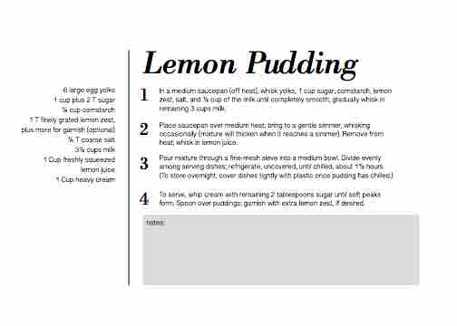

In a medium saucepan (off heat), whisk yolks, 1 cup sugar, cornstarch, lemon
zest, salt, and 1⁄2 cup of the milk until completely smooth; gradually whisk in
remaining 3 cups milk.
- Place saucepan over medium heat; bring to a gentle simmer, whisking
occasionally (mixture will thicken when it reaches a simmer). Remove from
heat; whisk in lemon juice.
- Pour mixture through a fine-mesh sieve into a medium bowl. Divide evenly
among serving dishes; refrigerate, uncovered, until chilled, about 11⁄2 hours.
(To store overnight, cover dishes tightly with plastic once pudding has chilled.)
- To serve, whip cream with remaining 2 tablespoons sugar until soft peaks
form. Spoon over puddings; garnish with extra lemon zest, if desired.
6 large egg yolks
1 cup plus 2 T sugar
1⁄4 cup cornstarch
1 T finely grated lemon zest,
plus more for garnish (optional)
1⁄4 T coarse salt
31⁄2 cups milk
1 Cup freshly squeezed
lemon juice
1 Cup heavy cream
notes
Other Recipes
